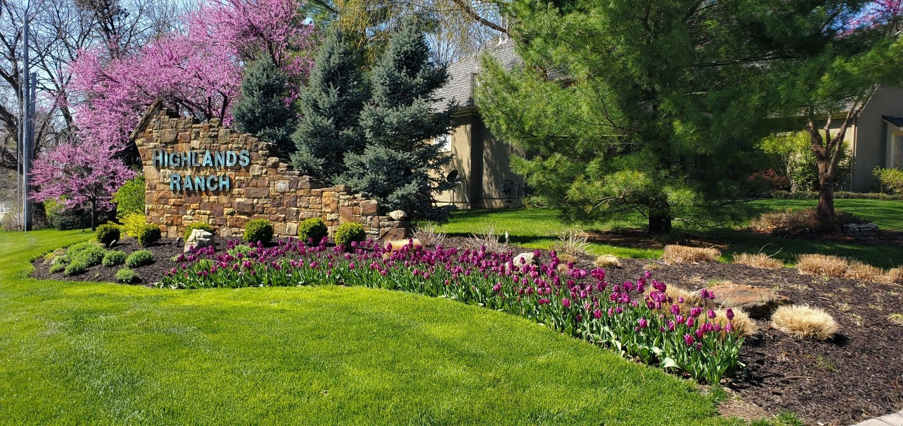

Westridge (Highlands Ranch, CO)Westridge is an ideal area for outdoor and indoor
recreational activities.
The neighborhood is located in a convenient location with two nearby grocery stores and plenty of
shopping retail. You're located near the Highlands Ranch Town Center,
and Aspen Grove Lifestyle Center and you're 12-15 minutes away from the Park Meadows Mall.
If you're commuting from your home to downtown Denver, it's a breeze with easy access to the highways. There is also an RTD bus commuting center within 3-5 minutes of the neighborhood. It will take you about 45 minutes to get to
the Denver International Airport and 15 minutes to get to the Lockheed Plant.
Local Favorites: Westridge Recreation Center: Gym that offers an indoor running path, indoor turf
field, weight cardio, a pair of swimming pools, and a hot tub. Highlands Ranch Golf Club: Beautiful,
semi-private golf club with mountain views! Includes a pro shop, and restaurant and is extremely
well-maintained. Redstone Park : Offers a fishing pond, tennis court, soccer field, softball grounds,
playgrounds, and an awesome dog park. Lansdowne Arms is lively restaurant & bar with Irish-inspired pub grub, lots of beer on tap & frequent entertainment, Fujiyama Japanese Hibachi & Sushi - restaurant preparing an extensive menu of familiar rolls, Japanese dishes & hibachi chow.
